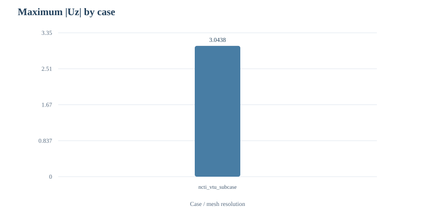

OPENCAE / BEAM VERIFICATION MODULE · V3.0.3.1
钢梁 VTU 自动验证报告
输入：ncti_vtu_subcase1.vtu · 算例数量：1 · 执行耗时：1.470 秒
Number of cases1
Max |Uz| / first case
3.0438
Data checks5
Displacement overview

Chart values use original result units. VTU does not guarantee mm unless separately documented.
数值汇总
| Case | Nodes | Elements | Max |U| | Max |Uz| | P95 |Uz| |
|---|---|---|---|---|---|
| ncti_vtu_subcase1 | 75,246 | 222,292 | 3.0513 | 3.0438 | 2.9687 |
网格敏感性
单文件模式：没有第二个网格，无法进行网格差异比较。
两组网格的位移变化较小，只能说明该指标具有初步稳定性，不能单凭此证明全部应力收敛。
应力字段摘要
| Case | Stress field | Component 0 abs peak | Mises (only if reliable) |
|---|---|---|---|
| ncti_vtu_subcase1 | StaticStress | 65.30030 | n/a |
未经明确分量顺序证明，第一应力分量不是 von Mises。空白表示未进行该换算。
载荷比例关系（可选）
未检测到至少三个同网格、不同载荷的明确工况，跳过载荷比例拟合。
自动检查结果
| Check | Status | Meaning |
|---|---|---|
| VTU numerical structure | PASS | Each VTU has mesh topology, valid point coordinates and finite 3-D displacements. |
| Finite-element solution provenance | NOT_VERIFIED | VTU alone does not verify loads, materials, support DOFs or solver convergence. |
| Tetra mesh | PASS | All cells were identified as VTK tetrahedron (type 10). |
| Stress field | INFO | Stress components were extracted; physical meaning depends on their ordering. |
| Grid convergence | NOT_VERIFIED | Only one mesh was provided. |
理论参照（可选）
未提供完整 beam_theory 参数，因此不自动推断几何尺寸、载荷和材料。
验证边界与后续建议
- VTU does not prove the input material, support or total force; review INP and solver log.
- Two-mesh displacement agreement is preliminary stability, not proof of grid convergence.
- The first StaticStress component is not automatically von Mises.
- Stress peaks can be mesh sensitive near concentrated loads and sharp corners.
数据来源为既有求解结果；本程序不重新求解。完整原始数据、SHA-256、 网格差异和各项检查状态见 validation.json、metrics.csv 和 comparison.csv。